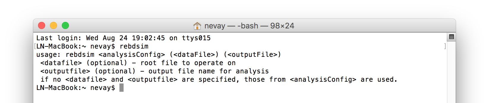

Output Analysis
This section describes how to load, view and analyse data from the recommended output rootevent format.
Broadly, there are 2 data formats with BDSIM and its analysis tools. These will be the same format, i.e. ROOT files, but will have a different layout. These are:
BDSIM raw data - the output of a BDSIM run
REBDSIM data - the output of various analysis tools containing histograms and optics.
A variety of tools are provided that accommodate several different workflows depending on data size versus computation time for analysis. The following tools are provided:
Tool |
Used on Data Type |
Produces as Output |
Purpose |
|---|---|---|---|
bdskim |
BDSIM raw |
BDSIM raw |
Filter a raw file to select events |
bdsimCombine |
BDSIM raw |
BDSIM raw |
Combine events from multiple files |
rebdsim |
BDSIM raw |
REBDSIM |
Make histograms of raw data |
rebdsimCombine |
REBDSIM |
REBDSIM |
Combine REBDSIM output files as if they were done in one run of rebdsim |
rebdsimHistoMerge |
BDSIM raw |
REBDSIM |
Merge per-made per event histograms in BDSIM raw output (e.g. ELoss) |
rebdsimOptics |
BDSIM raw |
REBDSIM |
Calculate optical functions from raw sampler data |
rebdsimOrbit |
BDSIM raw |
REBDSIM |
Extract the i-th hit from every sampler |
These are discussed each in:
See Basic Data Inspection for how to view the data and make the most basic on-the-fly histograms.
Strategies on the workflow and use of the tools is discussed in Data Workflows - Speed & Efficiency.
Setup
BDSIM must be installed after compilation for the analysis tools to function properly.
Environmental variables should be set by sourcing
<bdsim-install-dir>/bin/bdsim.sh.A ROOT logon macro may optionally be written for convenience in loading libraries.
If the setup is correct, you should be able to execute ‘rebdsim’ in the terminal. See Compiling BDSIM and Environmental Variables for more details.
{kind=link}

If the analysis will be regularly used interactively, it is worth automating the library
loading in root by finding and editing the rootlogon.C in your
<root-install-dir>/macros/ directory. Example text would be:
{
cout << "Loading rebdsim libraries" << endl;
gSystem->Load("librebdsim");
gSystem->Load("libbdsimRootEvent");
}
Note
The file extension is omitted on purpose.
The absolute path is not necessary, as the above environmental variables are used by ROOT to find the library.
Quick Recipes
Inspect Histograms
Run rebdsimHistoMerge on BDSIM output file (quick).
Browse output of rebdsimHistoMerge in TBrowser in ROOT.
See rebdsimHistoMerge - Simple Histogram Merging for details.
rebdsimHistoMerge output.root results.root
root -l results.root
> TBrowser tb;
Plot Energy Deposition & Losses
Run rebdsimHistoMerge on BDSIM output file (quick).
Plot in Python using pybdsim using dedicated plotting function.
rebdsimHistoMerge output.root results.root
>>> import pybdsim
>>> pybdsim.Plot.LossAndEnergyDeposition("results.root")
Find Event Number of Interesting Condition
If you want to recreate a specific event to witness it but need the event index.
Load raw BDSIM output file in ROOT.
Get the event tree.
Scan with condition.
root -l myfile.root
> TTree* evt = (TTree*)_file0->Get("Event")
> evt->Scan("Summary.index", "PrimaryLastHit.S>10")
The syntax is evt->Scan("Summary.index", "selection"). This will print out
the Summary.index variable in the data (i.e. the event index) for each entry in the tree
(i.e. event) that matches the selection condition. The condition should be with respect to variables
in the Event tree and without “Event” in them. ROOT typically prints a few at a time, with the
return key printing out the next few and q to quit this scanning mode.
Print Variable From Data
In ROOT terminology we can ‘scan’ a tree to see a variable. The option, colsize
(as a string for the 3rd argument) allows us to increase the precision printed out.
root -l myfile.root
> TTree* evt = (TTree*)_file0->Get("Event")
> evt->Scan("Summary.index")
> evt->Scan("Summary.index", "", "colsize=20")
Load Raw Data
>>> import pybdsim
>>> d = pybdsim.Data.Load("results.root")
>>> for event in d.GetEventTree():
...: print(event.Summary.duration)
bdskim - Skimming Tool
A tool called “bdskim” is included that allows us to “skim” or reduce the raw BDSIM data according to an event selection. This tool creates a new file but containing only select events. The other trees (Header, Options, etc) are copied.
This may be used to vastly reduce the size of an output file to included only the events of interest if they are rare.
This program takes a BDSIM output format file and produces one of the same format.
The selection is a text string without spaces that could normally be used with
TTree::Drawin ROOT.The selection is supplied in a text file, the name of which is given as an argument (e.g. skimselection.txt).
Usage:
bdskim <skimselection.txt> <input_bdsim_raw.root> (<output_bdsim_raw.root>)
e.g.
bdskim skimselection.txt 1234.root 1234-skim.root
bdskim skimselection.txt 1234.root
The second version uses 1234_skiimed.root as the default output file name by adding “_skimmed”
to the name of the input file.
As an example, if we use the data sample included in bdsim/examples/features/data:
bdskim skimselection.txt sample1.root sample1-skimmed.root
This reduces the sample1.root data file from containing 10 events to 4 events of interest. The contents of skimselection.txt are:
dq1_1.n>30
The output file name is optional and will default to
inputfilename_skimmed.root.Any line starting with
#will be treated as a comment and ignored.Any empty line will be ignored.
Only one selection should be specified in the file.
The selection must not contain any white space between characters, i.e. there is only 1 ‘word’ on the line.
Run information is not recalculated (e.g. histograms) and is simply copied from the original file.
bdsimCombine - Combine BDSIM Output Files
One may wish to combine multiple small output files from several BDSIM runs into a single file. The
included tool bdsimCombine achieves this. It is extremely similar to ROOT’s hadd
program but does not also merge the other trees in the output duplicating their data (e.g. we don’t
need N copies of the options or model).
Usage:
bdsimCombine <result.root> <file1.root> <file2.root> ...
where <result.root> is the desired name of the merged output file and <fileX.root> etc. are input files to be merged.
Example from bdsim/examples/features/data/:
bdsimCombine combined-raw.root sample*
This will add another TTree to the output called EventCombineInfo. This has one
number in it that is the file index that each event originally came from. This separate
TTree has the same number of events as the Event tree. It is, in ROOT terminology, a
“friend” tree, which means its variables can be used as if they are in the Event tree.
The index can be used to find the original file name in the header in the variable
combinedFiles (see Header Tree).
Notes:
More than 1 file must be merged otherwise the program will stop
You may use a glob command for the input file argument (e.g.
"*.root")Original and skimmed files may be used and mixed
Run information is not summed or updated and are only taken from the first file
Zombie files will be tolerated, but at least 1 valid file is required
The ParticleData, Beam, Options, Model and Run trees are copied from the 1st (valid) file and do not represent merged information from all files, i.e. the run histograms are not recalculated.
The Header contains the
nOriginalEventswhich is added up in either case of an original or skimmed file being used. In the case of original files, this is commonly 0, but the data is inspected to provide an accurate total in the merged file.The variable
skimmedFileis the logical OR of all the files loaded, so if one file is skimmed, then this will be true.Note, ROOT has a default threshold of 100GB per file, after which it will start a new file. bdsimCombine will only add the other Trees to the first file. This threshold is controllable in ROOT (TTree::SetMaxTreeSize) but no control over this is currently provided with bdsimCombine.
Note
This tool is distinct from rebdsimCombine - Output Combination as this tool only handles raw BDSIM output data. rebdsimCombine handles output from the analysis tool rebdsim.
To merge files together in small chunks to reduce a data size (e.g. every 10 files into 1), a utility
function in pybdsim is provided. See pybdsim.Run.Reduce and pybdsim.Run.ReduceParallel.
This allows us to reduce a data set into fewer files in parallel. Note, this may cause intensive disk
usage, but usually using some parallel processes will be significantly faster than just one.
Example:
python
> import chunkermp
> chunkermp.ReduceRun("datafiles/*.root", 10, "outputdir/", nCPUs=4)
This will combine the glob result of datafiles/*.root in chunks of 10 files at a time to outputdir
using 4 processes. Note, the trailing “/” must be present if it is a directory.
A single threaded version is included in bdsim/utils/chunker.py that could be used potentially
for Python2 but is untested.
This script simply builds and executes the system commands, so bdsimCombine must therefore be
available as a command (i.e. source <bdsim-install-dir>/bin/bdsim.sh before using).
rebdsim - General Analysis Tool
BDSIM is accompanied by an analysis tool called rebdsim (“root event BDSIM”) that provides the ability to use simple text input files to specify histograms and process data. It also provides the ability to calculate optical functions from the sampler data.
rebdsim is based on a set of analysis classes that are compiled into a library. These may be used through rebdsim, but also through the ROOT interpreter and in a user’s ROOT macro or compiled code. They may also be used through Python if the user has ROOT available through Python.
rebdsim is executed with one argument which is the path to an analysis configuration text file. This is a simple text file that describes which histograms to make from the data. Optionally, a second argument of a data file to operate on will override the one specified in the analysis configuration file. This allows the same analysis configuration to be used to analyse many different data files. A third optional argument (must have second argument specified) is the output file name that the resultant analysis will be written to.
Examples:
rebdsim analysisConfig.txt
rebdsim analysisConfig.txt output.root
rebdsim analysisConfig.txt output.root results.root
rebdsim analysisConfig.txt "*.root" results.root
If the output filename is specified this will take precedence over the output file name possibly specified in the analysis configuration text file.
If no output file name is given as an argument and no output file name is specified in the analysis configuration text file, then the default will be the input file name +
"_ana.root"and the file will be written to the current working directory.Multiple output files can be given at once with a glob regular expression (detected by the character
*in the input file name. To do this, put the pattern in quotes so it is expanded not by the shell but by rebdsim. e.g.rebdsim analysisConfig.txt "*.root".
Preparing an Analysis Configuration File
The analysis configuration file is a simple text file. This can be prepared by copying
and editing an example. The text file acts as a thin interface to an analysis in ROOT
that would commonly use the TTree->Draw() method.
The input text file has roughly two sections: options and histogram definitions.
Examples can be found in:
<bdsim>/examples/features/io/1_rootevent/analysisConfig.txt
<bdsim>/examples/features/analysis/simpleHistograms/analysisConfig.txt
<bdsim>/examples/features/analysis/perEntryHistograms/analysisConfig.txt
<bdsim>/examples/features/analysis/rebdsim/
We strongly recommend browsing the data in a TBrowser beforehand and double-clicking the variables. This gives you an idea of the range of the data. See Basic Data Inspection for more details.
There are three types of histograms that rebdsim can produce:
“Simple” histograms - these are sum over all entries in that tree.
“Per-Entry” histograms - here an individual histogram is made for each entry in the tree and these are averaged across all entries. In the case of the Event tree, each entry is a single event. A per-entry histogram is therefore a per-event histogram.
“Merged” histograms - these are the mean taken across all entries of a histogram already in the output file. For example, there is an energy deposition histogram stored with each event. This would be merged into a per-event average.
Per-Entry and Simple Histograms
For the energy deposition histogram for example, the energy deposition hits are binned as a function of the curvilinear S position along the accelerator. In fact, the S position is binned with the weight of the energy. In each event, a single primary particle can lead to the creation of thousands of secondaries that can each create many energy deposition hits. In the case of a simple histogram, all energy deposition hits across all events are binned. This gives us a total for the simulation performed and the bin error (uncertainty associated with a given histogram bin) is proportional to \(1/sqrt(N)\), where \(N\) is the number of entries in that bin. This, however, doesn’t correctly represent the variation seen from event to event. Using the per-event histograms, a single simple 1D histogram of energy deposition is created and these are averaged. The resultant histogram has the mean per-event (note the normalisation here versus the simple histograms) and the error on the bin is the standard error on the mean, i.e.
where \(\sigma\) is the standard deviation of the values in that bin for all events.
When loading the resultant histograms with pybdsim (see Python Utilities), functions are provided in the pybdsim.Data.TH1 2 and 3 classes that wrap the ROOT TH1D, TH2D and TH3D classes called
ErrorsToSTD()andErrorsToErrorOnMean()to easily convert between error on the mean and the standard deviation.
Note
Per-entry histograms will only be calculated where there exists two or more entries in the tree. In the case of the Event tree, this corresponds to more than two events.
Standard Error On The Mean
The errors in the per-event histograms from BDSIM as the standard error on the mean and not the standard deviation. These errors represent how well the central value, the mean, is estimated statistically. This is typically what is desired when performing a simulation to see that the simulation (a Monte Carlo) has converged to specific value. If we were to provide the standard deviation, it would be unclear whether the simulation has converged or whether there is just a large variation from event to event in that bin.
If the standard deviation is required, the user should multiply the errors by \(\sqrt{N_{events}}\). See Numerical Methods for a mathematical description of how the errors are calculated.
Histograms
Below is a complete of a rebdsim analysis configuration text file.
InputFilePath output.root
OutputFileName ana_1.root
CalculateOptics True
# Object Tree Name Histogram Name # of Bins Binning Variable Selection
Histogram1D Event Primaryx {100} {-0.1:0.1} Primary.x 1
Histogram1D Event Primaryy {100} {-0.1:0.1} Primary.y 1
Histogram1D Options seedState {200} {0:200} Options.GMAD::OptionsBase.seed 1
Histogram1D Model componentLength {100} {0.0:100} Model.length 1
Histogram1D Run runDuration {1000} {0:1000} Summary.duration 1
Histogram2D Event XvsY {100,100} {-0.1:0.1,-0.1:0.1} Primary.y:Primary.x 1
Histogram3D Event PhaseSpace3D {20,30,40} {-5e-6:5e-6,-5e-6:5e-6,-5e-6:5e-6} Primary.x:Primary.y:Primary.z 1
Histogram1DLog Event PrimaryXAbs {20} {-9:-3} abs(Primary.x) 1
Histogram2D Event PhaseSpaceXXP {20,30} {-1e-6:1e-6,-1e-4:1e-4} Primary.xp:Primary.x 1
Histogram2DLog Event PhaseSpaceXYAbs2 {20,30} {-6:-3,-1e-6:1e-5} abs(Primary.y):Primary.x 1
Warning
The variable for plotting is really a simple interface to CERN ROOT’s TTree Draw
method. If 1D, there is just x. If 2D, it’s y : x.
If 3D, it’s z : y : x. This only applies to the variable and
not to the bin specification.
HistogramNDdefines an N-dimension per-entry histogram where N is 1,2 or 3.SimpleHistogramNDdefines an N-dimension simple histogram where N is 1,2 or 3.Spectra,SpectraTEandSpectraRigiditydefine a set of 1D histograms for various particles for kinetic energy, total energy (“TE”) or rigidity respectively. This has slightly different syntax as described in Spectra.Each individual argument in the histogram rows must not contain any white space!
Columns in the histogram rows must be separated by any amount of white space (at least one space).
A line beginning with
#is ignored as a comment line.Empty lines are also ignored.
For bins and binning, the dimensions are separated by
,.For bins and binning, the range from low to high is specified by
low:high.For a 2D or 3D histogram, x vs. y variables are specified by
samplername.y:samplername.x. See warning above for order of variables.Variables must contain the full ‘address’ of a variable inside a Tree.
Variables can also contain a value manipulation, e.g.
1000*(Primary.energy-0.938)(to get the kinetic energy of proton primaries in MeV).
Histogram Selections
A selection is a weight that can be used as a filter to fill only desired information into the histogram. Conceptually, we loop over all data always and multiple by 0 if we want to filter it out.
If no selection or filtering is desired, use 1.
The selection is a weight. In the case of the Boolean expression, it is a weight of 1 or 0.
The selection can be a Boolean operation (e.g.
Primary.x>0) or simply1for all events.Multiple Boolean operations can be used e.g.
Primary.x>0&&samplername.ParentID!=0.If a Boolean and a weight is desired, multiply both with the Boolean in brackets, e.g.
Eloss.energy*(Eloss.S>145.3). Soweight*(Boolean).True or False, as well as 1 or 0, may be used for Boolean options at the top.
ROOT special variables can be used as well, such as
Entry$andEntries$. See the documentation link immediately below.
Note
Per-entry histograms will only be calculated where there exists two or more entries in the tree. In the case of the Event tree, this corresponds to more than two events. Whilst the per-entry histograms will work for any tree in the output, they are primarily useful for per-event analysis on the Event tree.
The variable and selection go directly into ROOT’s TTree::Draw method and if you are familiar with these, any syntax it supports can be used. A full explanation on the combination of selection parameters is given in the ROOT TTree class: https://root.cern.ch/doc/master/classTTree.html. See the “Draw” method and “selection”.
Spectra
The Spectra command is a convenient way to make common energy or rigidity spectra (1D) histograms for a variety of particles species. Normally, we would need to make 1 histogram in energy with a selection for each particle species by PDG ID. This could be done manually as follows:
# Object Tree Name Histogram Name # of Bins Binning Variable Selection
Histogram1D Event. Protons {100} {1:10} samplerName.energy samplerName.partID==2212
Histogram1D Event. ProtonsPrimary {100} {1:10} samplerName.energy samplerName.partID==2212&&samplerName.parentID==0
Histogram1D Event. ProtonsSecondary {100} {1:10} samplerName.energy samplerName.partID==2212&&samplerName.parentID>0
Histogram1D Event. Neutrons {100} {1:10} samplerName.energy samplerName.partID==2112
Histgoram1D Event. Electrons {100} {1:10} samplerName.energy samplerName.partID==11
However, this can be equivalently achieved with the Spectra command:
#Object Sampler Name # of Bins Binning Particles Selection
SpectraTE samplerName 100 {1:10} {2212,p2212,s2212,2112,11} 1
where samplerName is the name of the sampler in the data to be analysed. Here, the histograms in total energy (i.e. “TE” suffix) are created with 100 bins from 1 to 10 GeV for all protons, primary protons, secondary protons, neutrons and electrons.
See examples in bdsim/examples/features/analysis/rebdsim/spectra*.
Note
The weight variable is always included in the spectra histograms.
The required columns are:
Column |
Description |
|---|---|
Command |
Which type of spectra to make |
Sampler name |
Name of sampler in data to be analysed |
Number of bins |
Number of bins in each histogram |
Binning |
The binning range |
Particle specification |
A list of particles - see below |
Selection |
‘1’ or a filter as in a regular histogram |
These are made by default on a per-event basis, but can be made a set of simple
histograms also by prefixing Spectra with “Simple”. The set of histograms is always made on the
Event tree in the BDSIM output data and uses kinetic energy by default. Note that kinetic
energy is not stored by default in the output
and the option option, storeSamplerKineticEnergy=1; should be used at simulation time.
Alternatively, the suffix “TE” can be used to use the total energy variable “energy” in the data.
Spectra Commands
The following commands are accepted.
Command |
Description |
|---|---|
Spectra |
Per-event histograms in kinetic energy |
SpectraMomentum |
Per-event histograms in momentum |
SpectraTE |
Per-event histograms in total energy |
SpectraRigidity |
Per-event histograms in rigidity |
SimpleSpectra |
Total histograms in kinetic energy |
SimpleSpectraMomentum |
Total histograms in momentum |
SimpleSpectraTE |
Total histograms in total energy |
SimpleSpectraRigidity |
Total histograms in rigidity |
Each of these can be suffixed with “Log” for logarithmic binning. Note as with the Histogram command, if logarithmic binning is used, the bin limits should be the power of 10 desired. e.g.
SpectraLog samplerName 100 {-2:4} {2212,p2212,s2212,2112,11} 1
To make a set of logarithmically binned histograms from \(10^{-2}\) GeV to \(10^{4}\) GeV.
Spectra Particle Specification
Particles can be specified in several ways:
Example |
Description |
|---|---|
{11,-11,22,2212} |
Histograms are made for the specified comma-separated PDG IDs. The sign of each is observed, so -11 is not the same as 11. |
{particles} |
A histogram for every unique particle that is not an ion encountered in the data is made. |
{ions} |
A histogram for every unique ion encountered in the data is made. |
{all} |
A histogram for every unique particle or ion encountered in the data is made. Caution - this could be a lot. |
{top10} * |
A histogram is made for every unique particle and ion encountered in data but only the top N specified are saved as judged by the integral of each histogram including weights. Here 10 is used but any positive number above 1 can be used e.g. Top5 is valid. |
{p11,s11,-11,22} |
The letter ‘p’ or ‘s’ can be prefixed to a PDG ID to specify primary or secondary versions of that particle species. This can be applied to any PDG ID however, it only makes sense for particle(s) in the beam definition (or user bunch file or event generator file). |
{top10ions} * |
Similar to top10 but only for ions. The number may be a positive integer greater than 1. e.g. {top5ions} |
{top10particles} * |
Similar to top10 but only for non-ions. |
{total,11,-11,22} |
The keyword ‘total’ will make a histogram that accepts all particles for total. The total histogram is written out with PDG ID |
Warning
(*) The topN syntax cannot be used with simple histograms (e.g. with the syntax SimpleSpectra) because we need to perform per-event analysis to build up a set of PDG IDs at each event and re-evaluate the top N.
Warning
(*) When using rebdsimCombine to merge multiple rebdsim output files, spectra will be merged too as expected. In the case of Top N histograms, the top (by integral) particle species may be different from file to file. The histograms are mapped in the first file loaded and any not matching these ones will be ignored, so you may end up with a subset of histograms and statistics. This is purposeful because adding 0 entries for a newly encountered histogram in the accumulation would result in a possibly lower than average true mean. Care should be taken to observe the number of entries in each merged histogram which is the number of events merged for that histogram. To avoid this, specific PDG IDs should be given.
Note
No white space should be in the particle specification.
Note
The total histogram, if requested, is written out with PDG ID 0.
Logarithmic Binning
Logarithmic binning may be used by specifying ‘Log’ after ‘HistogramND’ for each dimension. The dimensions specified in order are x, y, z. If a linearly spaced dimension is required, the user should write ‘Lin’. If nothing is specified it is assumed to be linear.
Examples:
Histogram1D // linearly spaced
Histogram1DLog // logarithmically spaced
Histogram2D // X and Y are linearly spaced
Histogram2DLog // X is logarithmically spaced and Y linearly
Histgoram2DLinLog // X is linearly spaced and Y logarithmically
The bin’s lower edges and upper edges should be an exponent of 10. For example, to generate a 1D histogram with thirty logarithmically spaced bins from 1e-3 to 1e3, the following syntax would be used:
Histogram1DLog Event. EnergySpectrum {30} {-3:3} Eloss.energy 1
Uneven Binning
Variable bin widths in histograms may also be used. These may be used in one or multiple dimensions and in combination with logarithmic binning. Uneven binning is specified by supplying a text file with a single column of bin edges per dimension. These are the lower bin edges as well as the upper most one. Therefore, at least 2 bin edges are required to define the minimum 1 bin. e.g. a histogram with 1 single bin of width 2 centred at 3 would be defined by a text file containing the 2 lines:
1.0
3.0
Implementation notes:
The text file name must end with
.txt.The text file should contain one number per line.
The number may be in scientific or floating point or integer format.
The number of bins must still be specified in the histogram definition, but the number is ignored (see the value “1” in the example below).
The text file name (path relative to the execution location, or absolute path) is used to define the bin edges in that dimension.
No white-space must be allowed inside the binning specification.
Examples can be found in bdsim/examples/features/analysis/rebdsim/. Specifically,
“unevenBinning.txt” and “bins-x.txt”. An example Python script called “makebinning.py” is provided
that generates random bin widths in a range.
Examples:
Histogram1D Event UnevenX {1} {bins-x.txt} d2_1.x 1
Histogram2D Event UnevenXY {1,1} {bins-x.txt,bins-y.txt} d2_1.y:d2_1.x 1
Histogram2D Event UnevenY {10,1} {-0.5:0.5,bins-y.txt} d2_1.y:d2_1.x 1
Histogram3D Event UnevenXYZ {1,1,1} {bins-x.txt,bins-y.txt,bins-z.txt} d2_1.x:d2_1.y:d2_1.energy 1
Histogram3D Event UnevenYZ {11,1,1} {-0.5:0.5,bins-y.txt,bins-z.txt} d2_1.x:d2_1.y:d2_1.energy 1
Histogram3D Event UnevenZ {11,8,1} {-0.5:0.5,-1:1,bins-z.txt} d2_1.x:d2_1.y:d2_1.energy 1
Histogram2DLog Event LogXUnevenY {100,1} {-5:1,bins-x.txt} d1_1.x:d2_1.energy 1
Histogram2DLinLog Event UnevenXLogY {1,100} {bins-x.txt,-5,1} d2_1.energy:d1_1.x 1
Uneven binning can be used in combination with logarithmic binning, but the uneven one should be labelled as linear (i.e. “Lin”).
Analysis Configuration Options
The following (case-insensitive) options may be specified in the top part.
Option |
Description |
Default |
|---|---|---|
AllBranchesActivated |
Developer debug option to turn on all branches. |
False |
BackwardsCompatible |
ROOT event output files from BDSIM prior to v0.994 do not have the header structure that is used to ensure the files are the right format and prevent a segfault from ROOT. If this option is true, the header will not be checked, allowing old files to be analysed. |
True |
CalculateOptics |
Whether to calculate optical functions or not |
False |
Debug |
Whether to print out debug information |
False |
EmittanceOnTheFly |
Whether to calculate the emittance freshly at each sampler or simply use the emittance calculated from the first sampler (i.e. the primaries). The default is false and therefore calculates the emittance at each sampler. |
False |
EventStart |
Event index to start from - zero counting. Default is 0. |
0 |
EventEnd |
Event index to finish analysis at - zero counting. Default is -1 that represents how ever many events there are in the file (or files if multiple are being analysed at once). |
-1 |
InputFilePath |
The root event file to analyse (or regex for multiple). |
None |
MergeHistograms |
Whether to merge the event level default histograms provided by BDSIM. Turning this off will significantly improve the speed of analysis if only separate user-defined histograms are desired. |
True |
OutputFileName |
The name of the result file written to |
None |
OpticsFileName |
The name of a separate text file copy of the optical functions output |
None |
PrintOut |
Whether there is any per-event print out at all. The default is True. |
False |
PrintModuloFraction |
The fraction of events to print out. If you require for every event, set this to 0. |
0.01 |
ProcessSamplers |
Whether to load the sampler data or not |
False |
VerboseSpectra |
Print out the full expanded definition of any spectra that have been defined. |
False |
Variables In Data
See Basic Data Inspection for how to view the data and make the most basic on-the-fly histograms.
rebdsimCombine - Output Combination
rebdsimCombine is a tool that can combine rebdsim output files correctly (i.e. the mean of the mean histograms) to provide the overall mean and error on the mean, as if all events had been analysed in one execution of rebdsim. Simple histograms are simply summed (not averaged).
The combination of the histograms from the rebdsim output files is very quick in comparison to the analysis. rebdsimCombine is used as follows:
rebdsimCombine <result.root> <file1.root> <file2.root> ...
where <result.root> is the desired name of the merged output file and <fileX.root> etc. are input files to be merged. This workflow is shown schematically in the figure below.
rebdsimHistoMerge - Simple Histogram Merging
BDSIM, by default, records a few histograms per event that typically include the primary particle impact and loss location as well as the energy deposition. The histograms are stored in vectors inside the Event tree of the output. These cannot be viewed directly in the ROOT TBrowser as they are in a vector. Even then, each histogram is for one event only. To view the average of all the histograms, a dedicated tool is provided that provides a subset of the rebdsim functionality. rebdsim would automatically combine these histograms while performing analysis.
A tool rebdsimHistoMerge is provided to take the average of only the already existing histograms without the need to prepare an analysis configuration file. It is run as follows:
rebdsimHistoMerge output.root results.root
or
rebdsimHistoMerge output.root
This creates a ROOT file called (first example) “results.root” and (second example) “output_histos.root”, that contains the average histograms across all events. This can only operate on BDSIM output files, not rebdsim output files.
The output file name is optional and will default to
inputfilename_histos.root.
rebdsimOptics - Optical Functions
rebdsimOptics is a tool to load sampler data from a BDSIM output file and calculate optical functions as well as beam sizes. It is run as follows:
rebdsimOptics output.root optics.root
or
rebdsimOptics output.root
This creates a ROOT file called (first example) “optics.root” and (second example) output_optics.root, that contains the optical functions of the sampler data.
This may also take the optional argument --emittanceOnTheFly (exactly, case-sensitive)
where the emittance is recalculated at each sampler. By default, we calculate the emittance
only for the first sampler and use that as the assumed value for all other samplers. This
does not affect sigmas but does affect \(\alpha\) and \(beta\) for the optical functions.
If the central energy of the beam changes throughout the lattice, e.g. accelerating or decelerating cavities are used, then the emittance on the fly option should be used.:
rebdsimOptics output.root optics.root --emittanceOnTheFly
The order is not interchangeable.
The output file name is optional and will default to
inputfilename_optics.root.The output is not mergeable with rebdsimCombine.
See Optical Validation for more details.
rebdsimOrbit - Orbit Extraction
A small tool was made but not actively used to extract the i-th hit from every sampler. In the case where we simulate one particle and sample all beam line elements, this gives us the ‘orbit’ of that particle.
rebdsimOrbit output.root orbit.root
The argument output.root is a BDSIM raw file. The output of this program is a REBDSIM file that can be loaded with the pybdsim Python utility.
Data Workflows - Speed & Efficiency
It is easily possible to generate problematic quantities of data with such a simulation as BDSIM. Here, we discuss some common workflows with data.
Speed Tips
Whilst the ROOT file IO is very efficient, the sheer volume of data to process can easily result in slow running analysis. To combat this, only the minimal variables should be loaded that need to be. rebdsim automatically activates only the ‘ROOT branches’ it needs for the analysis. A few possible ways to improve performance are:
Reduce number of 2D or 3D histograms if possible. Analysis is linear in time with number of bins.
Remove unnecessary histograms from your analysis configuration file.
Avoid unnecessary filters in the selection.
Turn off optical function calculations if they’re not needed or don’t make sense, i.e. if you’re analysing the spray from a collimator in a sampler, it makes no sense to calculate the optical functions of that distribution.
Turn off the MergeHistograms option. If you’re only making your own histograms, this should considerably speed up the analysis for a large number of events.
Simple histograms to not require loading each entry in the tree and an analysis with only simple histograms will be quicker. Per-entry histograms of course, require loading each entry.
rebdsim ‘turns off’ the loading of all data and only loads what is necessary for the given analysis.
Scaling Up - Parallelising Analysis
For high-statistics studies, it’s common to run multiple instances of BDSIM with different seeds (different seeds ensures different results) on a high throughout the computer cluster. Key parameters to consider are:
the total number of events being analysed
the total volume (Mb, Gb, Tb) of data being analysed
There is a minimum time per event for analysis on the order of 1 ms. Depending on the quantity of data stored per event, the data may take longer to load. It may also take longer to analyse if many histograms are requested.
Generally, on a single computer, simulation and analysis can become slow at anywhere from 50,000 to 10,000,000 events. Also, ~ 1 - 10 Gb is probably the practical limit for quick analysis on a laptop.
In contrast, sometimes, the simulation itself is slow but the output data is quite small.
Below are 3 example strategies that can be used and for which tools are included. These are:
Low-Data Volume
e.g. simulation slow, output data low volume
If the overall output data volume is relatively low, it is recommend to analyse all of the output files at once with rebdsim. In the analysis configuration file, the InputFilePath should be specified as “*.root” to match all the root files in the current directory.
Note
For “*.root” all files should be from the same simulation and only BDSIM output files (i.e. not rebdsim output files).
rebdsim will ‘chain’ the files together to behave as one big file with all of the events. This is shown schematically in the figure below.
Schematic of strategy for a low volume of data produced from a computationally intense simulation. Multiple instances of BDSIM are executed, each producing their own output file. These are analysed all at once with rebdsim.
This strategy works best for a relatively low number of events and data volume (example numbers might be < 10000 events and < 10 GB of data).
High-Data Volume
e.g. simulation slow, output data high volume
In this case, it is better to analyse each output file with rebdsim separately and then combine the results. In the case of per-event histograms, rebdsim provides the mean per event, along with the error on the mean for the bin error. A separate tool, rebdsimCombine, can be used to combine these rebdsim output files into one single file. This is numerically equivalent to analysing all the data in one execution of rebdsim but significantly faster. See rebdsimCombine - Output Combination for more details.
Schematic of strategy for a high-data volume analysis. Multiple instances of BDSIM are executed in a script that then executes rebdsim with a suitable analysis configuration. Only the output files from rebdsim are then combined into a final output identical to what would have been produced from analysing all data at once, but in vastly reduced time.
Raw Data Reduction
e.g. a 2 stage simulation where only ~ 1% of data from the first is passed to the second stage
In the case where you want raw BDSIM data but want to reduce it to a select number of events meeting some criteria, two tools can be used. Firstly, bdskim to skim a data file according to a selection on the events, and then bdsimCombine to combine many skimmed raw data files into one single file.
For example, if we are interested in relatively rare events and we cannot make our simulation any more efficient (e.g. with choice of beam distribution, physics lists, cross-section biasing), then we could run many instances of BDSIM on a computer farm. Each job would run BDSIM, then bdskim, then return the skimmed file back. The skimmed files could be merged manually giving one single file of raw data with events of interest.
The total number of events simulated is preserved in the header so we can normalise any result correctly later on to get the correct physical rate.
Schematic of strategy for a skimming data reduction. Multiple instances of BDSIM are executed in a script that then executes bdskim with a suitable selection file. Only the output files from bdskim are then combined into a final output.
Normalisation
If skimming is used, we must know the original number of events simulated so we can correctly normalise any results for the original per-event rate. The header in each BDSIM and REBDSIM output file contains several numbers that provide this information.
The default histograms from rebdsim are per-event normalised. Only “SimpleHistograms” are unnormalised.
These are also documented in Header Tree.
Variable Name |
Type |
Description |
|---|---|---|
skimmedFile |
bool |
Whether the file’s Event tree is made of skimmed events. |
nOriginalEvents (*) |
unsigned long long int |
If a skimmed file, this is the number of events in the original file. |
nEventsRequested (*) |
unsigned long long int |
Number of events requested to be simulated from the file. |
nEventsInFile (*) |
unsigned long long int |
Number of events in the input distribution file. |
nEventsInFileSkipped (*) |
unsigned long long int |
Number of events from the distribution file that were skipped due to filters. |
distrFileLoopNTimes |
unsigned int |
Number of times to replay a given distribution file. |
(*) This variable may only be filled in the second entry of the tree as they are only available at the end of a run and ROOT does not permit overwriting an entry. The first entry to the header tree is written when the file is opened and must be there in case of a crash or the BDSIM instance was killed.
As an example, the following 2-stage simulation is described:
BDSIM is used to simulate a high energy proton on a target with only muons recorded in a sampler after the target
The output from the first stage is skimmed as only (as an example) 1% of data has a relevant muon in the sampler.
The files are combined 10 to 1 with bdsimCombine as each file now only has very few events. Each resultant file has approximately 10x the 1% of events.
The skimmed-then-combined output (in BDSIM raw format) is then loaded as an input distribution into the second stage simulation model of the rest of the beamline. Some filters are used in loading the events that results in 2% of these remaining events being discarded. Additionally, each file is looped 5 times to repeat the same input particles with a different physics outcome to improve statistics.
Histograms are made on the second stage simulation.
Finally, the histograms are combined together from all simulations to form a single result set of histograms.
Note
The example fractions are not specific and are just fictional example numbers to allow you to follow the calculation.
In some cases the variable is just copied from one file to another.
The following table is an example of how the described numbers would evolve in the header after each step described. It represents the most complicated workflow possible, to show the evolution of the numbers.
After |
File Format |
nOriginalEvents |
nEventsRequested |
nEventsInFile |
nEventsInFileSkipped |
distrFileLoopNTimes |
TTree / TH1 Entries |
|---|---|---|---|---|---|---|---|
bdsim |
BDSIM Raw |
N |
N |
0 |
0 |
1 |
N |
bdskim (1%) |
BDSIM Raw |
N |
N |
0 |
0 |
1 |
0.01 x N |
bdsimCombine (10 files) |
BDSIM Raw |
10 x N |
10 x N |
0 |
0 |
1 |
10 x 0.01 x N |
bdsim (5 loops of file)(2% rejected on load) |
BDSIM Raw |
10 x N |
5 x 10 x 0.01 x N |
10 x 0.01 x N |
0.02 x 10 x 0.01 x N |
5 |
5 x 10 x 0.01 x N x 0.98 |
rebdsim |
REBDSIM |
10 x N |
5 x 10 x 0.01 x N |
10 x 0.01 x N |
5 x 0.02 x 10 x 0.01 x N |
5 |
5 x 10 x 0.01 x N x 0.98 |
rebdsimCombine (J files) |
REBDSIM |
J x 10 x N |
J x 5 x 10 x 0.01 x N |
J x 0.01 x N |
J x 5 x 0.02 x 10 x 0.01 x N |
5 |
J x 5 x 10 x 0.01 x N x 0.98 |
Note
For J, it is not strictly J times but the sum over J. In the table, there is an assumption there is the exact same number of events and skimmed events in each file, whereas, in reality, it will be slightly different. These numbers are purely for illustrative purposes.
The final per-entry histograms at the end of this workflow have \(J \times 5 \times 10 \times 0.01 \times N \times 0.98\) entries, where one entry represents one event. The histograms must be multiplied by:
to recover the original rate per proton on target in this simulation. This is done automatically by rebdsim. rebdsimCombine just adds together the already correctly normalised histograms.
User Analysis
Whilst rebdsim will cover the majority of analyses, the user may desire a more detailed or customised analysis. Methods to accomplish this are detailed here for interactive or compiled C++ with ROOT, or through Python.
The classes used to store and load data in BDSIM are packaged into a library. This library can be used interactively in Python and ROOT to load the data manually.
A custom analysis can also be put in files the same as rebdsim would produce and then rebdsimCombine can be used on them. This allows us to scale up a custom analysis to any size. See Create A REBDSIM File in Python.
Analysis in Python
This is the preferred method. Analysis in Python can be done using ROOT in Python directly or through our library pybdsim (see Python Utilities).
Note
ROOT must have been installed or compiled with Python support.
You can test whether ROOT works with your Python installation by starting Python and trying to import ROOT - there should be no errors.
>>> import ROOT
The library containing the analysis classes may be then loaded:
>>> import ROOT
>>> ROOT.gSystem.Load("librebdsim")
>>> ROOT.gSystem.Load("libbdsimRootEvent")
The classes in bdsim/analysis will now be available inside ROOT in Python.
This can also be conveniently achieved with pybdsim:
>>> import pybdsim
>>> pybdsim.Data.LoadROOTLibraries()
This raises a Python exception if the libraries aren’t found correctly. This is done automatically when any BDSIM output file is loaded using the ROOT libraries.
IPython
We recommend using IPython instead of pure Python to allow interactive exploration
of the tools. After typing at the IPython prompt for example pybdsim., press
the tab key and all of the available functions and objects inside pybdsim (in this
case) will be shown.
For any object, function or class, type a question mark after it to see the doc-string associated with it.
>>> import pybdsim
>>> d = pybdsim.Data.Load("combined-ana.root")
>>> d.
d.ConvertToPybdsimHistograms d.histograms2d
d.filename d.histograms2dpy
d.histograms d.histograms3d
d.histograms1d d.histograms3dpy
d.histograms1dpy d.histogramspy
Raw Data Loading
Any output file from the BDSIM set of tools can be loaded with:
>>> import pybdsim
>>> d = pybdsim.Data.Load("myoutputfile.root")
This will work for files from BDSIM, rebdsim, rebdsimCombine, rebdsimHistoMerge
and rebdsimOptics. This function may return a different type of object depending
on the file that was loaded. The two types are DataLoader, which is the same as
the rebdsim C++ class but in Python, and RebdsimFile (defined in
pybdsim/pybdsim/Data.py), which is a Python class
to hold the output from a rebdsim output file and conveniently convert ROOT histograms
to numpy arrays. The type can easily be inspected:
>>> type(d)
pybdsim.Data.RebdsimFile
REBDSIM Histogram Loading
Output from rebdsim can be loaded using pybdsim. The histograms made by rebdsim are loaded as the ROOT objects they are, but are also converted to numpy arrays using classes provided by pybdsim for convenience. The Python converted ones are held in dictionaries suffixed with ‘py’. The histograms are loaded into dictionaries where the key is a string with the full path and name of the histogram in the rebdsim output file. The value is the histogram from the file.
>>> import pybdsim
>>> d = pybdsim.Data.Load("rebdsimoutputfile.root")
>>> d.histograms
{'Event/MergedHistograms/ElossHisto': <ROOT.TH1D object ("ElossHisto") at 0x7fbe365e9520>,
'Event/MergedHistograms/ElossPEHisto': <ROOT.TH1D object ("ElossPEHisto") at 0x7fbe365ea750>,
'Event/MergedHistograms/ElossTunnelHisto': <ROOT.TH1D object ("ElossTunnelHisto") at 0x7fbe365eab40>,
'Event/MergedHistograms/ElossTunnelPEHisto': <ROOT.TH1D object ("ElossTunnelPEHisto") at 0x7fbe365eaf30>,
'Event/MergedHistograms/PhitsHisto': <ROOT.TH1D object ("PhitsHisto") at 0x7fbe365e8bd0>,
'Event/MergedHistograms/PhitsPEHisto': <ROOT.TH1D object ("PhitsPEHisto") at 0x7fbe365e9cb0>,
'Event/MergedHistograms/PlossHisto': <ROOT.TH1D object ("PlossHisto") at 0x7fbe365e8fc0>,
'Event/MergedHistograms/PlossPEHisto': <ROOT.TH1D object ("PlossPEHisto") at 0x7fbe365ea0a0>,
'Event/PerEntryHistograms/EnergyLossManual': <ROOT.TH1D object ("EnergyLossManual") at 0x7fbe365a3a50>,
'Event/PerEntryHistograms/EnergySpectrum': <ROOT.TH1D object ("EnergySpectrum") at 0x7fbe365a2e20>,
'Event/PerEntryHistograms/EventDuration': <ROOT.TH1D object ("EventDuration") at 0x7fbe325907b0>,
'Event/PerEntryHistograms/TunnelDeposition': <ROOT.TH3D object ("TunnelDeposition") at 0x7fbe35e2c800>,
'Event/PerEntryHistograms/TunnelLossManual': <ROOT.TH1D object ("TunnelLossManual") at 0x7fbe365a40b0>,
'Event/SimpleHistograms/Primaryx': <ROOT.TH1D object ("Primaryx") at 0x7fbe325cf9d0>,
'Event/SimpleHistograms/Primaryy': <ROOT.TH1D object ("Primaryy") at 0x7fbe325d0230>,
'Event/SimpleHistograms/TunnelHitsTransverse': <ROOT.TH2D object ("TunnelHitsTransverse") at 0x7fbe30a7fe00>}
>>> d.histogramspy
{'Event/MergedHistograms/ElossHisto': <pybdsim.Data.TH1 at 0x12682fa10>,
'Event/MergedHistograms/ElossPEHisto': <pybdsim.Data.TH1 at 0x12682f850>,
'Event/MergedHistograms/ElossTunnelHisto': <pybdsim.Data.TH1 at 0x12682f690>,
'Event/MergedHistograms/ElossTunnelPEHisto': <pybdsim.Data.TH1 at 0x12682f990>,
'Event/MergedHistograms/PhitsHisto': <pybdsim.Data.TH1 at 0x12682f890>,
'Event/MergedHistograms/PhitsPEHisto': <pybdsim.Data.TH1 at 0x12682f950>,
'Event/MergedHistograms/PlossHisto': <pybdsim.Data.TH1 at 0x12682f7d0>,
'Event/MergedHistograms/PlossPEHisto': <pybdsim.Data.TH1 at 0x12682f5d0>,
'Event/PerEntryHistograms/EnergyLossManual': <pybdsim.Data.TH1 at 0x12682f810>,
'Event/PerEntryHistograms/EnergySpectrum': <pybdsim.Data.TH1 at 0x122d577d0>,
'Event/PerEntryHistograms/EventDuration': <pybdsim.Data.TH1 at 0x12682f910>,
'Event/PerEntryHistograms/TunnelDeposition': <pybdsim.Data.TH3 at 0x116abe090>,
'Event/PerEntryHistograms/TunnelLossManual': <pybdsim.Data.TH1 at 0x122d67190>,
'Event/SimpleHistograms/Primaryx': <pybdsim.Data.TH1 at 0x12682f710>,
'Event/SimpleHistograms/Primaryy': <pybdsim.Data.TH1 at 0x12682f790>,
'Event/SimpleHistograms/TunnelHitsTransverse': <pybdsim.Data.TH2 at 0x12682fa50>}
Looping Over Events
The following is an example of how to loop over events in a BDSIM output file using pybdsim.
>>> import pybdsim
>>> import numpy
>>> d = pybdsim.Data.Load("myoutputfile.root")
>>> eventTree = d.GetEventTree()
>>> for event in eventTree:
... print(list(event.Primary.x))
In this example, the variable event will have the same structure as the
Event tree in the BDSIM output. See Basic Data Inspection for more details
on how to browse the data.
Note
The branch “Summary” in the Event and Run trees used to be called “Info” in BDSIM < V1.3. This conflicted with TObject::Info() so this looping in Python would work for any data in this branch, hence the change.
Warning
Do not construct numpy arrays inside the loop - this seems to expose some behaviour with numpy where it gets slower and slower with every loop.
Accumulating - Average Histograms
We typically want a histogram that is an average per-event. If writing our own analysis in Python we can of course make a ROOT histogram through ROOT’s Python interface and fill it as we loop over events. However, we can also use rebdsim’s analysis classes through ROOT.
Terminology : “accumulating” means to add up some quantity over a data set. Here, our accumulators (things that accumulate) are building up the average as they go.
The HistogramAccumulator class wraps a ROOT TH1D or TH2D or TH3D object and
calculates a rolling average. The class is available in our rebdsim library which is
imported automatically when loading a data file with pybdsim. However, one can explicitly
load it with:
>>> import pybdsim
>>> pybdsim.Data.LoadROOTLibraries()
HistogramAccumulator can be found in
bdsim/analysis/HistogramAccumulator.hh.It works on TH1D, TH2D, TH3D histograms.
You do not need to specify the number of dimensions of the histogram - it’s automatic.
This is the basic usage of HistogramAccumulator in Python:
>>> import ROOT
>>> import pybdsim
>>> h = ROOT.TH1D("HistogramNameForFileBASE", "A Nice Title", 100, 0, 20) # 100 bins from 0 to 20
>>> ha = ROOT.HistogramAccumulator(h, h.GetName()[:-4], h.GetTitle())
>>> h.Reset()
>>> h.Fill(1.2) # fill the histogram
>>> ha.Accumulate(h) # add this histogram to the rolling mean
... repeat these last 3 lines ...
>>> result = ha.Terminate() # returns a TH1* that is the average
Note
TH1 is the base class of TH1D, TH2D and TH3D
Note
We need a basic ROOT histogram to base the accumulator off of. It needs to have a
different name, but it can have the same title. The first argument, the object name,
is the one used when writing to a file and ROOT uses this internally to identify it
so it must be unique. Here, we append the suffix “BASE” onto its name for the
simple histogram, and we give the accumulator the desired name without this suffix
by stripping it off ([:-4] means up to the 4th last character).
An example in a loop:
>>> import pybdsim
>>> d = pybdsim.Data.Load("mytastydata.root")
>>> h = ROOT.TH1D("HistogramNameForFileBASE", "A Nice Title", 100, 0, 20) # 100 bins from 0 to 20
>>> ha = ROOT.HistogramAccumulator(h, h.GetName()[:-4], h.GetTitle())
>>> for event in d.GetEventTree():
h.Reset()
for i in range(event.someSampler.n):
h.Fill(event.someSampler.x, event.someSampler.weight)
ha.Accumulate(h)
>>> result = ha.Terminate()
>>> outfile = pybdsim.Data.CreateEmptyRebdsimFile("somehistograms.root", d.header.nOriginalEvents)
>>> pybdsim.Data.WriteROOTHistogramsToDirectory(outfile, "Event/PerEntryHistograms", [result])
>>> outfile.Close()
Create A REBDSIM File in Python
When making a custom analysis, we most likely might want to apply it to a large data set using a computer farm. If we have per-event average histograms, you cannot use hadd from ROOT as it simply adds histograms together. We want to make use of rebdsimCombine as we would normally, but we wrote our own ROOT file with our own histograms. How do we proceed?
pybdsim has a utility function that will create a rebdsim file that you can write your own histograms too. This isn’t required, but then allows you to use rebdsimCombine.
>>> import pybdsim
>>> outfile = pybdsim.Data.CreateEmptyRebdsimFile("outfilename.root")
>>> pybdsim.Data.WriteROOTHistogramsToDirectory(outfile, "Event/PerEntryHistograms", [th1Object])
>>> outfile.Close()
The last item should be a list of ROOT histograms (e.g. TH1D, TH2D, TH3D). The directory should match the layout of a regular rebdsim file. e.g. :
Event/PerEntryHistogramsfor average histogramsEvent/SimpleHistogramsfor regular histograms that aren’t averaged or event-normalised.
REBDSIM In Python
The custom analysis could be used to replace rebdsim. Although there is no point to this, examples are provided that illustrate the usage of the classes and tools. See:
bdsim/examples/features/analysis/pythonAnalysis
Note
rebdsim itself cannot be used in Python. This part only describes how to reproduce rebdsim again in Python as an example of data analysis.
Sampler Data
The following shows the convenience methods to access sampler data from a BDSIM output file using pybdsim:
>>> import pybdsim
>>> import numpy
>>> d = pybdsim.Data.Load("myoutputfile.root")
>>> primaries = pybdsim.Data.SamplerData(d)
>>> primaries.data.keys()
['weight',
'trackID',
'energy',
'turnNumber',
'parentID',
'xp',
'zp',
'rigidity',
'ionZ',
'charge',
'ionA',
'modelID',
'S',
'T',
'yp',
'partID',
'n',
'mass',
'y',
'x',
'z',
'isIon']
>>> primaries.data['x']
array([0.001, 0.001, 0.001, ..., 0.001, 0.001, 0.001])
The SamplerData function has an optional second argument that takes the
index (zero counting) of the sampler or the name as it appears in the file. This
includes the primaries (“Primary”).
Note
This loads all data into memory at once and is generally not as efficient as looping over event by event. This is provided for convenience, but may not scale well to very large data sets.
Warning
This concatenates all events into one array, so the event by event nature of the data is lost. This may be acceptable in some cases, but it is worth considering making a 2D histogram directly using rebdsim rather than say loading the sampler data here and making a 2D plot. Certainly, if the statistical uncertainties are to be calculated, this is a far preferable route.
Analysis in C++ or ROOT
The following commands can be used as either compiled C++ or as interactive C++ using ROOT. Here, we show their usage using ROOT interactively.
When using ROOT’s interpreter, you can use the functionality of the BDSIM classes dynamically. First, you must load the shared library (if not done so in your ROOT logon macro) to provide the classes:
root> gSystem->Load("librebdsim");
root> gSystem->Load("libbdsimRootEvent");
Loading this library exposes all classes that are found in <bdsim>/analysis. If you
are familiar with ROOT, you may use the ROOT file as you would any other given the
classes provided by the library:
root> TFile* f = new TFile("output.root", "READ");
root> TTree* eventTree = (TTree*)f->Get("Event");
root> BDSOutputROOTEventLoss* elosslocal = new BDSOutputROOTEventLoss();
root> eventTree->SetBranchAddress("Eloss.", &elosslocal);
root> eventTree->GetEntry(0);
root> cout << elosslocal->n << endl;
345
root>
The header (“.hh”) files in <bdsim>/analysis provide the contents and abilities
of each class.
Raw Data Loading
This would of course be fairly tedious to load all the structures in the output. Therefore, a data loader class is provided that constructs local instances of all the objects and sets the branch address on them (links them to the open file). For example:
root> gSystem->Load("librebdsim");
root> gSystem->Load("libbdsimRootEvent");
root> DataLoader* dl = new DataLoader("output.root");
root> Event* evt = dl->GetEvent();
root> TTree* evtTree = dl->GetEventTree();
Here, a file is loaded and by default all data is loaded in the file.
REBDSIM Histogram Loading
To load histograms, the user should open the ROOT file and access the histograms directly.:
root> TFile* f = new TFile("output.root");
root> TH1D* eloss = (TH1D*)f->Get("Event/MergedHistograms/ElossHisto");
It is recommended to use a TBrowser to get the exact names of objects in the file.
Looping Over Events
We get access to event by event information through a local event object and the linked event tree (here, a chain of all files) provided by the DataLoader class. We can then load a particular entry in the tree, which for the Event tree is an individual event:
root> evtTree->GetEntry(10);
The event object now contains the data loaded from the file.
root> evt->Eloss->n
(int_t) 430
For our example, the file has 430 entries of energy loss for event #10. The analysis loading classes are designed to have the same structure as the output file. Look at bdsim/analysis/Event.hh to see what objects the class has.
One may manually loop over the events in a macro:
void DoLoop()
{
gSystem->Load("librebdsim");
DataLoader* dl = new DataLoader("output.root");
Event* evt = dl->GetEvent();
TTree* evtTree = dl->GetEventTree();
int nentries = (int)evtTree->GetEntries();
for (int i = 0; i < nentries; ++i)
{
evtTree->GetEntry(i);
std::cout << evt->Eloss->n << std::endl;
}
}
root> .L myMacro.C
root> DoLoop()
This would loop over all entries and print the number of energy deposition hits per event.
Sampler Data
Samplers are dynamically added to the output based on the names the user decides in their input accelerator model. The names of the samplers can be accessed from the DataLoader class:
std::vector<std::string> samplerNames = dl->GetSamplerNames();
Output Classes
The following classes are used for data loading and can be found in bdsim/analysis:
DataLoader.hh
Beam.hh
Event.hh
Header.hh
Model.hh
Options.hh
Run.hh
Numerical Methods
Algorithms used to accurately calculate quantities are described here. These are documented explicitly as a simple implementation of the mathematical formulae would result in an inaccurate answer in some cases.
Numerically Stable Calculation of Mean & Variance
To calculate the mean in the per-entry histograms as well as the associated error (the standard error on the mean), the following formulae are used:
These equations are however problematic to implement computationally. The formula above for the variance requires two passes through the data to first calculate the mean, then the variance using that mean. The above equation can be rearranged to provide the same calculation with a single pass through the data, however, such algorithms are typically numerically unstable, i.e. they rely on a small difference between two very large numbers. With the finite precision of a number represented in a C++ double type (~15 significant digits), the instability may lead to un-physical results (negative variances) and generally incorrect results.
The algorithm used in rebdsim to calculate the means and variances is an online, single-pass numerically stable one. This means that the variance is calculated as each data point is accumulated, it requires only one pass of the data, and does not suffer numerical instability. To calculate the mean, the following recurrence relation is used:
The variance is calculated with the following recurrence relation that requires the above online mean calculation:
After processing all entries, the variance is used to calculate the standard error on the mean with:
Merging Histograms
rebdsimCombine merges histograms that already have the mean and the error on the mean in each bin. These are combined with a separate algorithm that is also numerically stable.
The mean is calculated as: